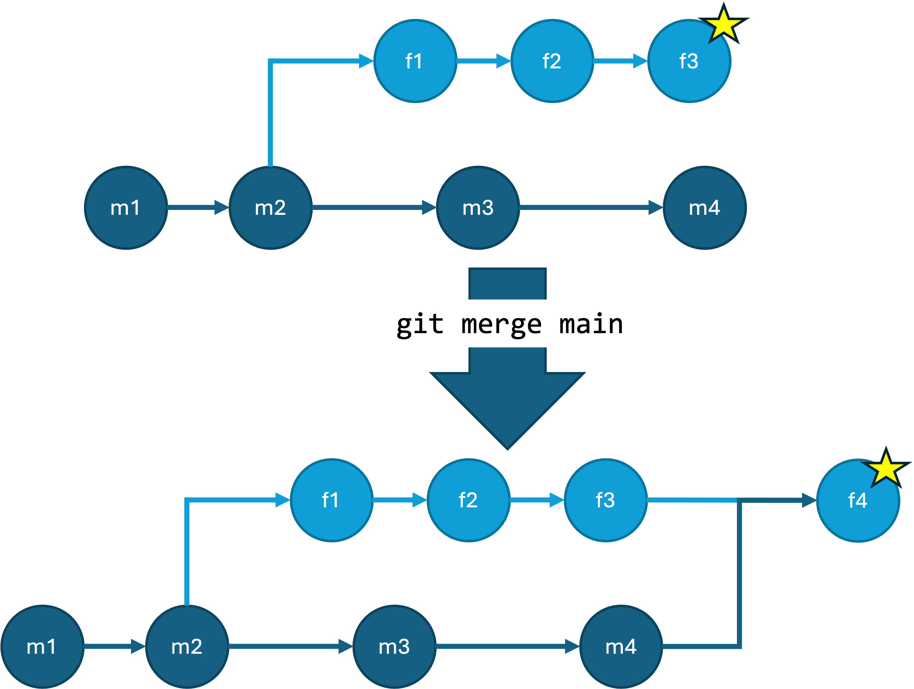
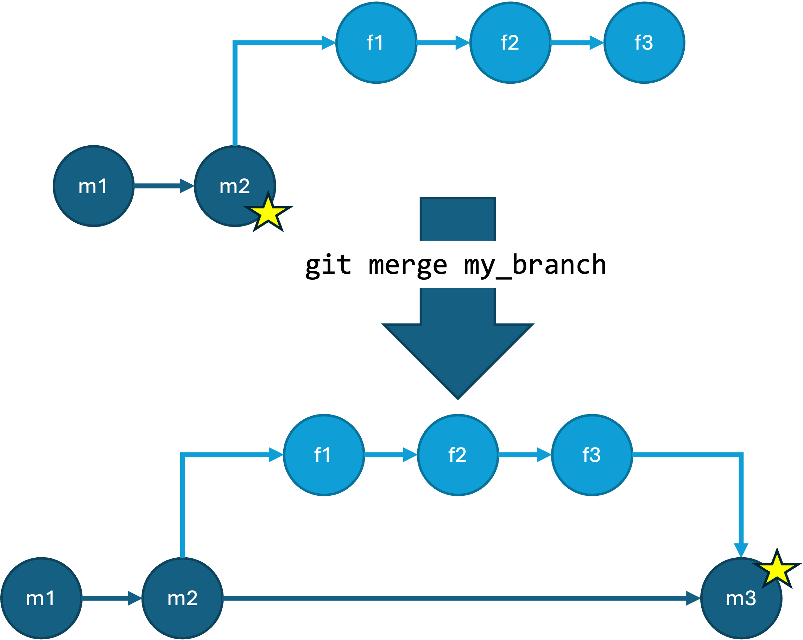

Content from Introduction
Last updated on 2025-06-16 | Edit this page
Estimated time: 20 minutes
Overview
Questions
- What are the challenges for sharing code?
- How can we ensure everyone has access to the latest version?
- How can we enable equal contribution?
Objectives
- Understand how git tools and processes address challenges for collaborative code development
You may have used git for your own projects, but how can it be used to work collaboratively on a software project?
There are a few challenges that come up when working on shared code. We want to make sure everyone has access to and knows what is the latest version, and we want to make sure everyone has an equal opportunity to contribute. It can also be difficult to keep organized while code is being actively developed and make sure everyone is on the same page about the state of the code.
We can use sites like GitHub, GitLab, BitBucket, and similar to share code with others. These sites also enable teams to contribute to software projects that they are working on together by hosting the code in a centralized location that everyone has access to. This allows everyone to view the latest version, and make updates as needed. It also provides a mechanism for outside collaborators to contribute to the project, say for open source software.
In this lesson we will be briefly going over some more advanced git tools that become essential when working collaboratively. These are branches and pull requests. In a collaborative environment, branches allow more than one person to work on the code independently, separate from the centralized main branch. Pull or merge requests provide a transparent mechanism to bring the changes made on a branch into the main branch, and encourage communication amongst the maintainers on whether the changes should be pulled in or if further changes are needed.
While technology helps, it is not the solution on its own. We will also discuss git workflows, which describe the strategy of how branches and pull requests should be used to stay organized and productive. We will show a few common workflows, and give general guidance on how to choose what will work well for your project and team.
Before diving in, we should review some basic terminology and commands. Note that while other options are available, we are focusing on GitHub for this lesson.
- repository (repo): The project, contains all data and history (commits, branches, tags).
- remote (repository): The copy of the repository on a remote server, such as GitHub. Accessible to anyone who has access to the repository on the server. Also referred to as the “central” repository.
- local (repository): A copy of the repository in another place, such as a laptop or your home directory on a cluster. Generally accessible to one person.
- commit: Snapshot of the project, gets a unique identifier (e.g. c7f0e8bfc718be04525847fc7ac237f470add76e).
- branch: Independent development line. The main development line is often called main or master.
- tag: A pointer to one commit, to be able to refer to it later. Like a commemorative plaque that you attach to a particular commit (e.g. phd-printed or paper-submitted).
- clone: Copying the whole repository to your laptop - the first time. This creates a local copy of the repository. “Clone” as a noun refers to the local copy of the repository.
- fork: Taking a copy of a repository (which is typically not yours) - your copy (fork) stays on GitHub/GitLab and you can make changes to your copy. “Fork” as a noun refers to the your forked copy of the repository.
- pull: Bring changes from a remote repository to your local repository.
- push: Bring changes from your local repository to the remote repository.
These definitions are adapted from Code Refinery: Concepts around Collaboration.
A note about git integrations: You may find that your IDE has git built in allowing you to use the GUI instead of running the commands we talk about here. In this lesson we are focusing on the command line git commands, since they should be universal across any system you use. After this lesson we encourage you to use what you are most comfortable with, and the commands we cover will also help you better understand the functionality of your IDE git integration.
Activity
Verify that you can access your GitHub account, have git installed on your computer, and can authenticate with GitHub from your computer, either using gh auth, ssh keys, or using your preferred GUI application.
Work in small groups of 3-4. Have one person in your group create a
repository from the provided
template. To create a repository from the template click “Use this
Template” in the top right, then “Create a New Repository”. Give access
to the others in your group. Everyone should accept the invitation to
collaborate and then create a local clone with git clone.
We will use this repository for the remainder of the exercises in this
section.
Additional Resources
- Code Refinery: Concepts around Collaboration
- Code Refinery: Introduction to Version Control
- Slide version of this lesson
Key Points
- Challenges for sharing code include making sure everyone has access to the latest version, everyone can contribute equally, keeping organized, and making sure everyone has equal opportunity to contribute.
- Branches and pull/merge requests provide mechanisms for individuals to work on the code independently and then integrate those changes into the main codebase.
- Git workflows are used to stay organized and productive.
Content from Branches
Last updated on 2025-06-16 | Edit this page
Estimated time: 30 minutes
Overview
Questions
- Why use branches?
- How do we use branches?
Objectives
- Be able to create and merge a branch
About Branches
Branches are independent development lines. Working independently, you can likely get away with using git without creating any branches, as in the first diagram in the figure below. However, when you begin to work with others, branches allow team members to work on the code without impacting the work of other developers or users.
These graph diagrams show repositories with different numbers of branches. The vertices, or circles, in these graphs show different commits, and each horizontal path is a branch. The first shows a repository with 1 main branch, the second a repository with 1 main and 1 feature branch, and the third repository 1 main and 2 feature branches.
Branches can have a few different purposes. Branches created to develop a specific feature are referred to as feature branches, and are often short-lived. Branches can also be used for longer-term purposes, such as having separate development and production branches. How you organize and use branches in your project is referred to as a branching strategy, which we will cover more when we talk about git workflows.
Changes made in one branch can be brought into another branch with a merge. For example, when a feature branch is completed it may be merged into the main branch. And, if while you are working on a feature branch the main branch changes, you can merge the changes from the main branch into your feature branch while you are still working.
How to Work with Branches
Creating Branches
You can create a branch on your local clone of the repository. If didn’t just clone the repository it is always good to make sure you have any recent changes to the main branch by checking out the main branch and running “git pull”:
git checkout main
git pullThen, to create a branch we can run:
git checkout -b my_new_branchThis will create the branch my_new_branch and move you
to the new branch. If you run git status at this point it
will display On branch my_new_branch. Making and committing
any changes will only update my_new_branch.
Creating a new branch. When you run
git checkout -b my_branch your new branch gets created and
checked out, meaning you are now on your new branch (represented by the
smiley face). Any commits you make will be on this branch until you
checkout another one.
Every time you run the git commit command the
commit will be added to your current branch.
The first time you push your branch to the remote repository, you will need to publish the branch by running run:
git push --set-upstream origin my_new_branchAfter this any commits can be pushed with a simple
git push.
Changing Branches
If you need to switch to another existing branch you can use the
git checkout command. For example, to switch back to the
main branch you can run:
git checkout mainRemember, if you aren’t sure which branch you are on you can run
git status. It is good practice before you start making
changes to any of your files to check that you are on the right branch
with git status, particularly if you haven’t touched the
code recently.
Switching branches using
git checkout.
Merging Branches
Bring the changes from one branch into another branch by merging them. When you merge branches, changes from the specified branch are merged into the branch that you currently have checked out. For example,
git checkout my_new_branch
git merge mainwill merge any changes introduced to main into the
my_new_branch. Merging in this direction is especially
useful when you’ve been working on my_new_branch for a
while and main has changed in the meantime.
Merging new commits from the main branch into the feature
branch with git merge main.
When development is complete on my_new_branch, it would
be merged into main:
git checkout main
git merge my_new_branchMerging new commits the feature branch into the main
branch with git merge my_branch.
Git will do its best to complete the merge automatically. For example, if none of the changes have happened in the same lines of code, things will usually merge cleanly. If the merge can’t complete automatically, this is called a merge conflict. Any conflicts in the files must be resolved before the merge can be completed.
Merge vs Rebase
There is another way to introduce changes from one branch to another:
rebasing. A rebase rewrites history. For example, if there are new
commits on the main branch while you are working on a feature branch,
you could merge those commits into your feature branch, as we describe
above. This creates a new commit with two parent commits: one in your
feature branch, one in the main branch. Alternatively, you can rebase
your feature branch onto the new end of the main branch with
git rebase main. Rebasing “replays” your feature branch
commits onto the new commits of the main branch, as if you started your
branch there.
Rebasing the feature branch onto new commits in the main branch with
git rebase main.
Rebasing creates a cleaner history, without the extra merge commit. However, rebases never be done on public branches that others might be using or even looking at. It will result in your repository and everyone else’s having different history, which can be confusing and difficult to fix. If no one else is looking at your branch, especially if you haven’t published it yet, rebasing is safe.
Activity
Everyone:
- Create a new branch in your local clone
- Publish the branch to the remote repository
- Make a small change, commit, and push
- Look at the remote repository, look at your change and your group’s changes
Now, all but one should run the following:
git pull
git checkout main
git merge branch_name
git pushDid anyone run into merge conflicts? How might this have been prevented?
There should be one team member who still has an unmerged branch at the end of this exercise.
Additional Resources
- Code Refinery: Branches
- Code Refinery: Conflict Resolution
- Atlassian Git Tutorials: Merging vs. Rebasing
- Slide version of this lesson
Key Points
- Branches allow team members to work on code without impacting the work of other developers or users
- Create a new branch with the git checkout -b command, for example: git checkout -b my_branch
- Change to another branch with the git checkout command, for example: git checkout my_other_branch
- Merge my_branch into the current branch with with the git merge command, for example: git merge my_branch
- Rebasing rewrites history and can sometimes be used instead of merge, where appropriate
- Never rebase on a public branch
Content from Pull Requests
Last updated on 2025-06-16 | Edit this page
Estimated time: 25 minutes
Overview
Questions
- What is a Pull Request?
- Why use Pull Requests?
- How do we use Pull Requests?
Objectives
- Understand the Pull Request process
- Be able to create and merge a Pull Request
What are Pull Requests?
A Pull Request is a GitHub a process to request that a branch be merged into another branch. It’s called a “Pull Request” because you are requesting that the change introduced be pulled into the other branch. In GitLab it is called a “Merge Request”. Pull requests provide a process and an opportunity for code review before merging branches you don’t own or manage by yourself, such as the main branch. They can also be a mechanism for proposing and discussing changes, and requesting additional changes be made before the branch is merged.
Working with Pull Requests
Creating a Pull Request
First, make sure you don’t have any commits you haven’t pushed to
GitHub. Go to your local repository and run git status. If
you have any commits you haven’t yet pushed, push them now with
git push. Remember, if you haven’t pushed from this branch
to the remote repository yet, you will be prompted to publish your
branch with
git push --set-upstream origin my_new_branch.
Now navigate to your branch in GitHub. If you’ve pushed any commits recently you may see a callout that says your branch has recent pushes and provides a button that says “Compare and Pull Request”. Pressing this will bring you to the form to create your Pull Request to the main branch. If you don’t have this button, you can select “Pull Requests” at the top of the page and select “New Pull Request”. From there select your branch under the “compare” dropdown. If you would like to merge your branch into a branch other than main, select that branch under the “base” dropdown. Then select “Create Pull Request”.
 Creating a Pull Request: If you recently pushed changes to your
branch you may see a button that says “Compare and Pull Request” on
GitHub.
Creating a Pull Request: If you recently pushed changes to your
branch you may see a button that says “Compare and Pull Request” on
GitHub.
At this point you will see a form. Fill out the form with a title and description for the Pull Request, and then click “Create Pull Request”. We will go more in depth on how to make good pull requests in a later section.
 Creating a Pull Request: Give your Pull Request a title and
description.
Creating a Pull Request: Give your Pull Request a title and
description.
Anatomy of a Pull Request
Once the Pull Request is created there are a few different tabs on the page. The first is the conversation tab, which shows a timeline of comments and commits, starting with the initial description that you gave when creating the Pull Request. At the bottom will be a box that shows the result of any Continuous Integration that has been defined, such as automated tests (the one in the image doesn’t have any set up), as well as whether there are any merge conflicts for the Pull Request.
 The conversation tab of a Pull Request.
The conversation tab of a Pull Request.
At the very bottom of the page is a box where you can leave a comment. GitHub supports markdown so you can include formatting with your comment.
 The conversation tab of a Pull Request. Scroll to the bottom of the
page to leave a comment.
The conversation tab of a Pull Request. Scroll to the bottom of the
page to leave a comment.
There is also a tab that shows all the commits in the Pull Request (the Commits tab). The last Files Changed tab shows the diff between the base branch and the Pull Request branch. This is useful in reviewing the Pull Request, and it allows you to leave in-line comments. If you see a line of code that needs to be updated or changed, you can click the + next to that line to leave a comment.
The Files Changed tab of a Pull Request, showing what the proposed
changes are for the Pull Request. You can click the + next to a line
number to leave an in-line comment.
Updating a Pull Request
Once the Pull Request is created you and anyone with access to the repository can make comments on the request. These comments might be clarifying questions or requests for additional changes. If additional changes are needed, make those changes in your branch and push them. The commits will be added to the Pull Request automatically and appear on the main Conversation page.
Accepting and Merging a Pull Request
Once a Pull Request has been reviewed and ready to be accepted, it can be merged. First verify that the branch has no conflicts with the base branch (the one that will be merged into). Any conflicts should be addressed with additional commits. When ready to merge, click “Merge Pull Request”, then click “Confirm merge”. You will be given the option to delete the branch. Whether you delete the branch depends on its purpose and how you and your group want to handle branches that have been merged. Deleting feature branches helps keep clutter down and makes it easier to find relevant branches. However, if you have any longer term branches, such as a development or production branch, you wouldn’t want to delete that.
 After clicking the “Merge Pull Request” button on the conversation,
click “Confirm Merge” to merge the pull request.
After clicking the “Merge Pull Request” button on the conversation,
click “Confirm Merge” to merge the pull request.
Activity
One team member should still have an unmerged branch from the previous exercise. If not, have one of you create a branch, introduce a small change, commit, push, then publish the branch.
Log into GitHub. The team member with the branch should create a pull request. Once it is created, everyone should look at the different parts of the PR and comment whether the branch looks okay to merge. The branch owner should make changes requested. If there are merge conflicts, those should be addressed (you can work together to address them). Once it is ready to merge, someone else on the team should merge the Pull Request.
In both this activity and the last one your branch was eventually merged into the main branch. How does this experience compare to the previous activity?
If you have extra time, the remaining team members can create their own Pull Requests with new branches.
Additional Resources
Key Points
- A Pull Request is a GitHub a process to request that a branch be merged into another branch.
- Pull requests provide a process and an opportunity for code review before merging branches and can be a mechanism for proposing, discussing, and requesting changes before the branch is merged.
Content from Git Workflows
Last updated on 2025-06-16 | Edit this page
Estimated time: 40 minutes
Overview
Questions
- What is a git workflow?
- Why use a git workflow
Objectives
- Know why to use a git workflow
- Understand some of the most common git workflows, and when you should deviate
- Be able to choose or design a workflow that meets your group’s needs
Introduction
When you are working with others in the same git repository, you’ll find you’ll need to come to an agreement on how you are going to work in the repository. This can include:
- How you are going to use branches
- What is considered the “latest version”, or what is “production” vs “in development”
- How those branches are merged
- When you are making pull requests and into what
- Whether you are working in a single, central repository, or separate forked repositories
These questions are often answered by what we will call a git workflow. A git workflow helps you keep organized when working on a team, helps everyone stay on the same page about the state of the code, and helps enable communication. If you’ve ever emailed around documents you were working on with a team, you might understand the value of everyone on the team always having access to both the latest version, and any material still in progress.
When we talk about git workflows often we are really discussing is branching strategies. The branching strategy is how you are going to use branches to work with the code. This includes the purposes of each branch (ex: a feature branch vs a release branch), where a new branch is created, and how, when, and where branches are merged. Different branches and branch types will have different lifetimes as well. For example, once a feature branch has been merged it can often be deleted, however a dedicated development branch might exist for the entire project.
The git workflow should also dictate what is stable under what conditions, what is tested, and may also include testing strategies.
Some Common Workflows
There are a few common workflows that are talked about the most. One might be better in some cases, another in others, but no one is necessarily the best in every case than any of the others. There will likely be one that best fits your application and your team’s goals, but you may find you will still need to make adjustments, and that is okay.
Centralized or Truck-Based Workflow
With a centralized workflow you only have one main branch (or trunk, borrowing terminology from SVN, another version control system). Team members work in their local clone and push commits less frequently. The central repository is meant to be “clean” and should be stable. Git will also prevent you from pushing any changes that cause conflicts. If someone else as pushed a change that conflicts with one of your local commits, git will not let you push those changes and will require you resolve the conflict locally before pushing.
A centralized workflow with a single main branch is not the best for collaborative development, although it may work okay in small teams. We mention it to give a name to a process you might already be familiar with, and as a starting point for other workflows.
Feature Branching Workflows and GitHub Flow
Since we’ve covered branching, a simple extension to the centralized workflow is a Feature Branching Workflow. The main branch is like the central repository in the centralized workflow, it is meant to be clean and stable. Instead in working directly in clones of the main branch, all development is done in feature branches, where each branch is created from the main branch to develop a specific feature. The branch is published soon after it is created in the remote repository and commits are regularly pushed. This allows other developers to see the branch and any changes early. Using feature branches also allows an individual developer to work on more than one feature at a time if needed. Say you are working on developing a feature that requires some time and thought, but in the process find a bug that should be fixed immediately. You can create a new branch, fix the bug, and merge it back into the main branch without introducing any of the partially developed code you are still working on in the other feature branch.
Once the feature is complete and tested, feature branches are merged back into the main branch through Pull Requests. Any merge conflicts should be handled in the feature branch before merging. This can be done by merging any new commits from the main branch into the feature branch, handling any conflicts that emerge. The changes are discussed and reviewed in the Pull Request, and once accepted hey are merged. Once merged, the lifecycle of a feature branch is general complete and it can be deleted if it is no longer needed.
This is also known as “GitHub Flow”, as it is used by the developers of GitHub for sections of their website, including their documentation. GitHub even has a dedicated page in their documentation describing the workflow. It is most useful for projects that have a rolling development cycle without specific versioned releases.
Git Flow
Git Flow is one of the most commonly used workflows. It is used for software projects that require robust, production-ready releases. It is suitable for larger teams where more than one person might work on the same feature.
Git Flow builds on a feature branching workflow, where instead of creating feature branches from the main branch, they are created from a separate permanent development branch. When a feature is complete, its branch is merged into the development branch. Individual release branches are created from the development branch, and once production-ready are merged into the main branch upon release and tagged. The main branch therefore contains only fully tested, stable, production code associated with a particular version. If the code has a bug in the main branch that needs to be fixed immediately, hotfix branches can be created off the main branched and merged directly back into the main branch without being added to the development branch or a release branch.
Git Flow was introduced with a blog post in 2010, which you can see here if you are interested.
GitLab Flow
Similar to GitHub Flow, GitLab Flow gets its name because it is the workflow used by GitLab. GitLab is a bit closer to the simplicity of GitHub Flow, but is more appropriate in cases where the rolling releases of GitHub Flow are not possible. GitLab Flow is similar to Git Flow in that feature branches are not merged directly into the production branch, however instead it has a separate named production branch and the feature branches are merged into the main branch, which is more like the development branch of Git Flow. Release branches are optional, and only recommended only when software is released to the outside world.
For more information, see GitLab’s article on GitLab Flow.
Forking Workflows
In each of these example workflows we have assumed that anyone contributing to a repository has the ability to directly push commits to a repository. However, sometimes you want to enable developers to contribute to a project without giving them access to the repository itself. In this case, a forking workflow might be suitable. Any of the workflows we’ve talked about already could incorporate forking. With a forking workflow individual developers create their own fork of a repository and do their development within their fork. When a feature is complete, the developer creates a Pull Request into the appropriate branch of the original repository. The owners of the repository can then approve the Pull Request at their discretion. This is how many open source projects encourage contributions.
With a forking workflow it can be easy to end up with an old version
of the code, especially if it changes frequently. It can get confusing
whether we are attempting to pull from or push to the fork or the
original repository. Setting up remotes with easy to remember aliases
makes this much easier. A “remote” is a named connection to a remote
repository. You can add and remove remotes with the
git remote add and git remote rm commands,
respectively. For example:
git remote add upstream https://github.com/project_team/project.git
git remote add my-fork https://github.com/me/project.gitHere we are adding a remote called “upstream” for our central team
repository and another called “my-fork” for our own fork. We can view
our remotes with git remote -v. Now when you want to
retrieve any changes from the upstream repository you can run
git fetch upstream. To update your main branch with these
changes, you would merge them into your local forked repository:
git checkout main # this is the main branch for your fork that you have cloned locally
git merge upstream/mainUsing remotes, fetching and merging upstream changes frequently, and
running commands like git status and
git remote -v can help you be successful using a forking
workflow. Merging upstream changes directly before making a Pull Request
and ensuring there are no merge conflicts is good etiquette and will
make it more likely that your Pull Request will be accepted.
Communicating with your Collaborators
Now that you’ve chosen a workflow for your project, how do you communicate it? This is most often done with a CONTRIBUTING document. The CONTRIBUTING document describes the git workflow you are using, any conventions for branch naming that you have, and anything else a collaborator should know in order to contribute. It should be tailored to your project and team, and so it might also include how to run the tests for the project, requirements before creating Pull Requests, or perhaps detailed instructions for how follow the workflow if your team is less familiar with git. One of the goals of a CONTRIBUTING document is to lower the barrier to entry to contributing to a project and a good one will encourage collaboration.
Enforcing your Workflow
There are tools that you can use to make sure everyone follows the agreed upon workflow, which can make it easier to collaborate with others. First, you can add branch protections, which will enforce certain rules for certain branches. A common one is to not allow commits directly to the main branch, requiring changes to go through a Pull Request. There are many options for branch protection that you can read about on the GitHub web page. Similarly, you can limit who on the team is able to push or merge changes into a particular branch, or in the entire repository. It is also a good idea to have testing and review requirements, particularly for production branches. These requirements and branch protections should be documented in the CONTRIBUTING document as well.
We will end with a quick note if your team works on shared systems, including clusters and HPC systems. Be careful with clones on shared drives, you never want to share a cloned repository. Each person should work within their own clone. You might also consider having additional “production” clone that is used for running. No one edits the production clone directly, it is only updated by pulling changes from the repository.
Activity
For your group’s “project” that you have been working on through this lesson discuss which workflow would work best for your team. Set up the repository as needed to support this workflow. Start a contributor guide that explains the workflow and any rules for contributing.
If time allows, discuss any projects that your group members work on collaboratively with others. Is there a specified workflow for this project? How would someone contribute to the project?
Additional Resources
- Code Refinery: Centralized Workflow
- Code Refinery: Distributed version control and forking workflow
- GitHub Flow
- GitLab Flow
- Git Flow
- Atlassian Git Tutorial: Comparing Workflows
- Atlassian Git Tutorial: Git Forks and Upstreams: How-to and a cool tip
- Slide version of this lesson
Key Points
- A git workflow describes how a team or group of contributors is to interact with a repository
- Git workflows keep a team organized and on the same page by helping them understand what state the code is in